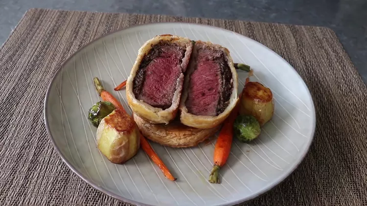

Beef Wellingtons

Perfectly cooked filet mignon topped with a rich, savory mushroom pate
is wrapped in a crispy pastry crust and served on top of a buttery
pastry base for a 1-2 punch that's hard to beat. Serve as-is or with a
simple, brown pan sauce.
Ingredients
- 3 tablespoons unsalted butter
- 10 large brown mushrooms, finely chopped
- ¼ teaspoon salt
- 2 tablespoons minced shallots
- freshly ground black pepper to taste
- 1 pinch cayenne pepper, or to taste
- 3 tablespoons white wine
- 2 ounces pate